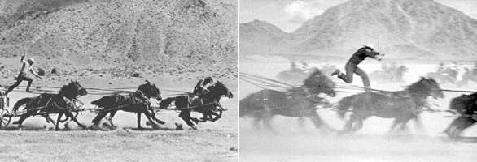
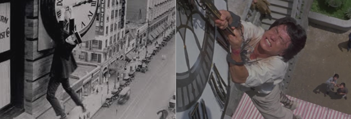
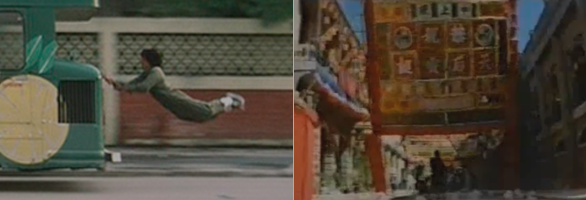
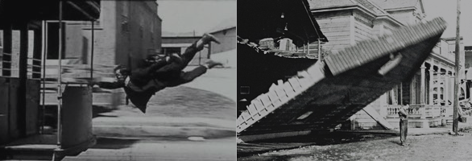

Geschichte und
Ausbildung.
Die vier Themen der ursprünglichen Website – kompakt eingeführt und bei Bedarf vollständig ausklappbar.
Geschichte des
Stuntman
Der Zirkus hat den Stunt geboren: Artisten und Gaukler waren seine ersten Darsteller. Als wagemutige Akrobaten vor die frühen Filmkameras traten, entstand der Beruf des Stuntman beziehungsweise Kaskadeurs.
Mehr anzeigen
Den ersten Stuntman der Kinogeschichte sah man im Film „Der Graf von Monte Christo“ im Jahre 1908. Der geschickte Akrobat musste in einer spektakulären Szene kopfüber von einer Klippe ins Meer springen.
Das französische Wort „Kaskadeur“ stammt aus dem Zirkusmilieu. Kaskaden sind wagemutige Sprünge, die durch langes Training und perfekte Körperbeherrschung möglichst ohne ernsthafte Verletzung ausgeführt werden. Zu den frühen Actiondarstellern gehörten auch die Artisten Buster Keaton, Harold Lloyd und Charlie Chaplin.
Yakima Canutt wurde ab den 1930er-Jahren zu einer Schlüsselfigur der Stuntausbildung. Seine Arbeit setzte wichtige Standards für professionelle Stunttechnik. Berühmt wurde auch Harold Lloyds Szene aus „Safety Last“ von 1923: Die Absicherung mit Plattformen und Drähten war damals bereits Voraussetzung für die Drehgenehmigung.




Berühmte Stuntman
Charlie Chaplin, Buster Keaton, Yakima Canutt, Harold Lloyd, John Ford, Gary Cooper, Harry Piel, Yuen Biao, Sammo Hung, Jackie Chan und Felix Baumgartner.
Wie werde ich
Stuntman?
Der Einstieg führt meist über Praktika und Mentoring bei erfahrenen Stuntleuten, spezialisierte Schulen oder eine mehrjährige Ausbildung zum Kaskadeur an einer Artistenschule.
Mehr anzeigen
Wie lernt man, von Brücken zu springen, durch Glasscheiben zu stürzen oder sich sicher in einer Actionszene zu bewegen? Ilian Simeonow empfiehlt Einsteigern das Praktikum bei einem Profi: Junge Menschen werden von erfahrenen Stuntleuten gelenkt, trainiert und vorbereitet. Eine 5½-jährige Ausbildung zum Kaskadeur an einer Artistenschule ist ein besonders intensiver Trainingsweg.
Private Stuntschulen bieten zusätzliche Ausbildungen und Workshops an. Unverzichtbar sind Organisationstalent, Teamfähigkeit und Flexibilität.
Voraussetzungen
- Talent und Ehrgeiz
- Körperbeherrschung und Koordinationsvermögen
- Geschicklichkeit und Reaktion
- Interesse, Neues zu lernen
- Sicherheitsgefühl und Selbstbewusstsein
Wagemut, Angstlosigkeit oder Leichtsinn sind dagegen keine erstrebenswerten Voraussetzungen. Verletzungen sind Berufsrisiko, doch das Risiko muss kalkulierbar bleiben: Stuntleute schützen sich selbst und das gesamte Team.
Versicherung & Vorsorge
Stuntleute arbeiten fest angestellt oder freiberuflich. Da der Beruf körperlich belastend ist, gehören Vorsorge für auftragsfreie Zeiten und eine berufliche Perspektive nach der aktiven Zeit dazu.
Geschichte der
Artistik
Artistik ist eine Kunstform, die hoch spezialisierte körperliche und geistige Fähigkeiten als Ausdrucksmittel nutzt. Sie prägt Zirkus, Varieté und das Veranstaltungswesen.
Mehr anzeigen
Zu den artistischen Disziplinen zählen Akrobatik, Äquilibristik, Kontorsionistik, Clownerie, Dressur, Schnellzeichnen, Verwandlungskunst, Messerwerfen, Kunstschießen, Fakirkunst, Jonglage und Magie.
Akrobatik
Akrobatik ist eine bewegungsintensive Ausdrucksform, die vor allem durch Drehungen um die Längs- und Breitenachse des Körpers gekennzeichnet ist. Formen sind unter anderem Kaskadeur, Schleuderbrett, Trampolin, Reck, Patere, Wurf, Luftakrobatik, russischer Barren und russische Schaukel.
Äquilibristik & Jonglage
Äquilibristik verlangt ein hoch entwickeltes Koordinationsvermögen beim Balancieren des eigenen Körpers, anderer Personen oder Requisiten. Dazu zählen Hoch- und Drahtseil, Perch, Einrad, Rola Bola, freistehende Leiter und Kunstrad. Jonglage verbindet Werfen, Fangen und Rotieren von Gegenständen – etwa mit Diabolo, Devilstick oder Keulen.

Wie werde ich
Artist?
Die Ausbildung hängt stark von Alter, Ziel und Lebenssituation ab: Staatliche Schulen, freie Artistenschulen, Workshops und Kinderzirkusse bieten unterschiedliche Wege.
Mehr anzeigen
Staatlich anerkannte Artistenschulen bieten mehrjährige Vollzeitausbildungen mit Abschluss an. Diese beginnen oft früh und lassen sich mit der regulären Schulausbildung kombinieren. Freie Artistenschulen bieten ebenfalls Vollzeitmodelle, aber auch Abend- und Wochenendkurse sowie Fortbildungen.
Kinderzirkus
Kinderzirkusse ermöglichen einen spielerischen Einstieg in Artistik und Theater. Kinder, Jugendliche und Erwachsene können allein, mit Freunden oder Familie Kunststücke entwickeln und bei Festen präsentieren.
Weitere Wege
Wer Talent und die nötigen charakterlichen Voraussetzungen mitbringt, kann sich auch direkt einem Zirkus anschließen und im Alltag mit Artisten trainieren. Dieser Weg ist fordernd und verlangt Durchhaltevermögen, Eigeninitiative und gute Zusammenarbeit.
Berufliche Realität
Artisten arbeiten häufig freiberuflich. Die körperliche Belastung macht Vorsorge für Zeiten ohne Aufträge und die Zeit nach der aktiven Laufbahn wichtig. Viele werden später Trainer, Lehrkräfte oder arbeiten weiter in Zirkus, Varieté und Event.